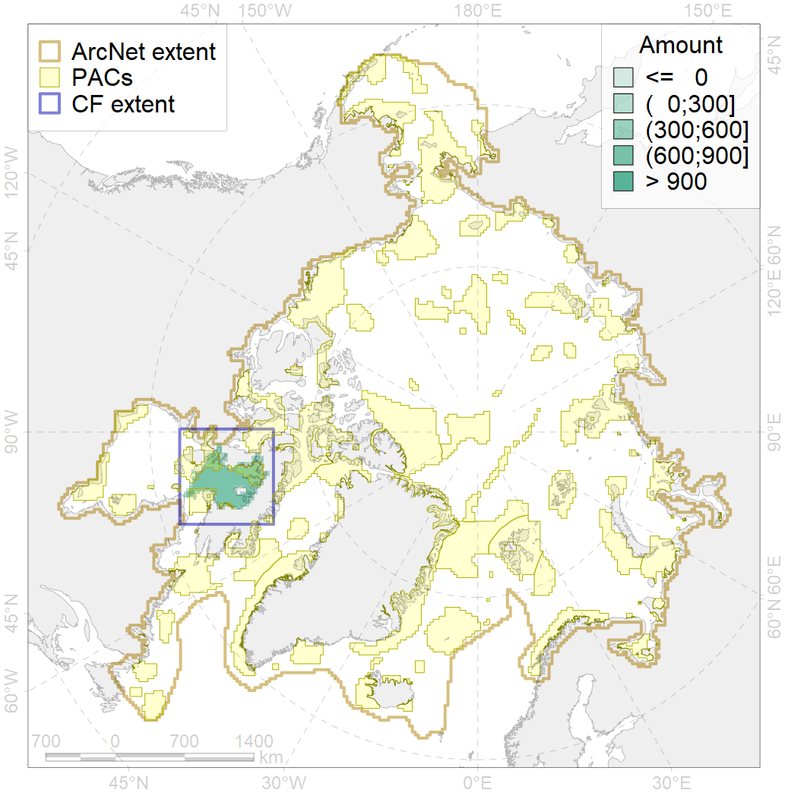
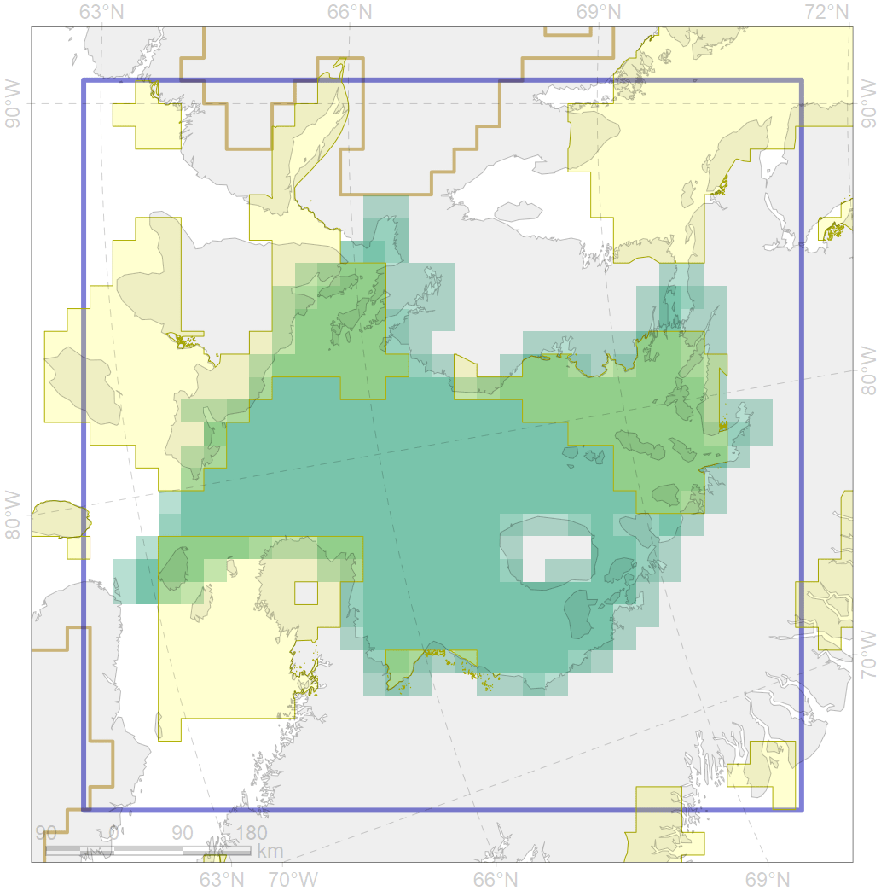

7045

| CF ID | 7045 |
| CF Name | Fox Basin trnasitional zone |
| Time Period | 1900-2010 |
| Source(s) | Spiridonov et al., in prep. |
| Seasonality | January - December |
| Depth Horizon | Sea floor |
| Methodology | Boundaries derived from biogeographic regionalization scheme, which is in preparation for publication |
| Author Name | V. Spiridonov |
| Notes | |
| Conservation Target Set in the Scenario | 0.1599898 |
| Conservation Target Achieved in the Scenario | 0.333 (Scenario: 208.3%) |
| PAC ID | Proportion in the PAC | Contribution to ArcNet Target Achievement | PAC’s Contribution to the Achieved Target |
|---|---|---|---|
| 66 | 16.8% | 92.0% | 44.2% |
| 67 | 9.6% | 54.2% | 26.0% |
| 73 | 3.8% | 22.4% | 10.7% |
| 74 | 0.9% | 4.3% | 2.1% |
| inner | 31.1% | 172.9% | 83.0% |
| outer | 68.9% | 35.4% | 17.0% |